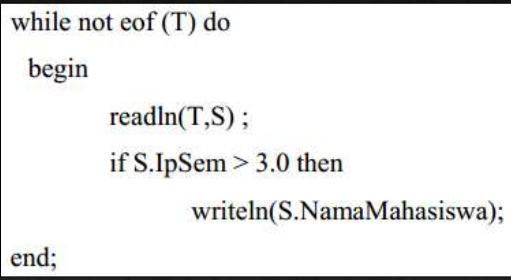

7.1.3 Antarmuka Berbasis Alami
▪ Dialog berbasis bahasa alami merupakan dialog yang menggunakan bahasa yang mudah dimengerti oleh manusia.
Contoh : cetak data mahasiswa yang memiliki ipk > 3.0
Kemudian bahasa tersebut diterjemahkan ke dalam instruksi yang ekuivalen yang bisa di mengerti komputer, seperti turbo Pascal.

Keuntungan dan Kerugian
A. Keuntungan menggunakan dialog berbasis bahasa alami yaitu:
▪ Tidak memerlukan sintaksis khusus.
▪ Luwes dan powerful.
▪ Alamiah.
▪ Menggunakan inisiatif campuran.
B. Kerugiannya menggunakan dialog berbasis bahasa alami yaitu:
▪ Mempunyai dualism.
▪ Bertele-tele.
▪ Opaque (tidak jelas).
▪ Perancangan perangkat lunak yang rumit.
▪ Tidak efisien.